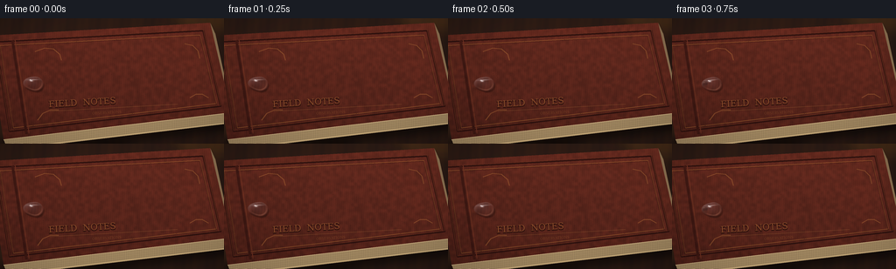
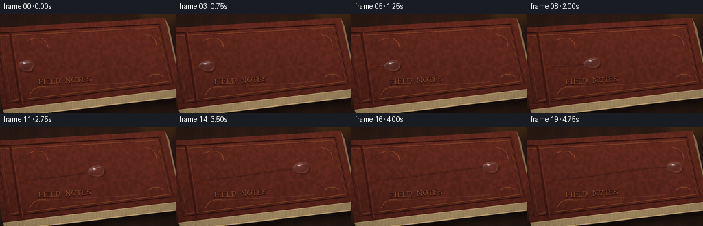
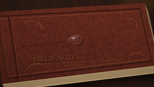

CODING AGENTS AS PIXEL WORLD MODELS
traex/GPT-5.6-Sol · phygen_040
点击播放 · 原生 RGB 像素
逐轮保存的候选
回放视频、检查图与代码变化。
每份候选均可单独播放。实际图片检查记录在下方工具轨迹中。
候选 01播放与检查图
点击播放 · 原生 RGB 像素


展开代码变化
--- 上一保存版本
+++ 本次保存版本
@@ -0,0 +1,224 @@
+from pathlib import Path
+import json, math
+import numpy as np
+from PIL import Image, ImageDraw, ImageFont, ImageFilter
+import artifact_io
+
+CASE_DIR = Path(__file__).resolve().parent
+spec = json.loads((CASE_DIR / 'task_spec.json').read_text())
+W, H, N = spec['width'], spec['height'], spec['frames']
+S = 4
+w, h = W*S, H*S
+rng = np.random.default_rng(4026)
+
+# ---------- Static macro scene: a worn leather field notebook ----------
+yy, xx = np.mgrid[0:h, 0:w]
+xf, yf = xx / S, yy / S
+# dark walnut desk around the book
+desk_grain = (2.2*np.sin(xf*.21 + yf*.035) + 1.1*np.sin(xf*.71 + 0.6*np.sin(yf*.1)))
+desk_light = 1.0 - 0.20*((xf-117)/180)**2 - 0.17*((yf-63)/105)**2
+base = np.zeros((h,w,3), np.float32)
+base[:,:,0] = 47*desk_light + desk_grain
+base[:,:,1] = 29*desk_light + desk_grain*.45
+base[:,:,2] = 22*desk_light
+base = np.clip(base,0,255).astype(np.uint8)
+scene = Image.fromarray(base, 'RGB')
+
+# soft, out-of-focus golden object in the upper background adds depth
+bokeh = Image.new('RGBA',(w,h),(0,0,0,0)); bd = ImageDraw.Draw(bokeh)
+bd.ellipse((191*S,-27*S,276*S,22*S), fill=(184,120,45,45))
+bd.ellipse((-30*S,103*S,25*S,159*S), fill=(117,70,33,28))
+bokeh = bokeh.filter(ImageFilter.GaussianBlur(10*S))
+scene = Image.alpha_composite(scene.convert('RGBA'), bokeh)
+
+# Book geometry in steep perspective.
+top_poly = [(-15*S,20*S),(240*S,5*S),(264*S,108*S),(4*S,139*S)]
+page_poly = [(4*S,139*S),(264*S,108*S),(268*S,120*S),(9*S,151*S)]
+right_pages = [(240*S,5*S),(264*S,108*S),(268*S,120*S),(246*S,18*S)]
+# shadows below the volume
+shadow = Image.new('RGBA',(w,h),(0,0,0,0)); sd=ImageDraw.Draw(shadow)
+sd.polygon([(0,138*S),(265*S,106*S),(280*S,127*S),(10*S,160*S)], fill=(0,0,0,145))
+shadow=shadow.filter(ImageFilter.GaussianBlur(5*S))
+scene=Image.alpha_composite(scene,shadow)
+# page block
+pages=Image.new('RGBA',(w,h),(0,0,0,0)); pd=ImageDraw.Draw(pages)
+pd.polygon(page_poly, fill=(185,157,112,255)); pd.polygon(right_pages, fill=(137,110,79,255))
+# page leaves, parallel to lower edge
+for j in range(8):
+ yoff=(140+j*1.25)*S
+ pd.line([(5*S,yoff),(267*S,(109+j*1.25)*S)], fill=(85,65,48,105 if j%2 else 155), width=max(1,S//2))
+# bright paper lip
+pd.line([(4*S,139*S),(264*S,108*S)], fill=(225,197,148,220), width=S)
+scene=Image.alpha_composite(scene,pages)
+
+# Leather is generated as a detailed, non-periodic material and clipped to the cover.
+# Multi-scale random fields through PIL resampling/blur.
+small = rng.integers(0,256,(42,74),dtype=np.uint8)
+low = np.asarray(Image.fromarray(small).resize((w,h),Image.Resampling.BICUBIC),dtype=np.float32)-128
+fine = rng.normal(0,1.0,(h,w)).astype(np.float32)
+fine_img = Image.fromarray(np.uint8(np.clip(fine*35+128,0,255))).filter(ImageFilter.GaussianBlur(.35*S))
+fine = (np.asarray(fine_img,dtype=np.float32)-128)/12
+# rotated directional leather fibers and subtle illumination
+fiber = 2.2*np.sin((xf*2.65+yf*.19)) + 1.0*np.sin((xf*6.4-yf*.31))
+illum = 1.06 - .0018*yf + .00032*xf
+leather=np.empty((h,w,4),dtype=np.uint8)
+material=(low/19 + fine + fiber)
+leather[:,:,0]=np.clip(91*illum+material*1.18,0,255)
+leather[:,:,1]=np.clip(38*illum+material*.47,0,255)
+leather[:,:,2]=np.clip(28*illum+material*.32,0,255)
+leather[:,:,3]=255
+leather_img=Image.fromarray(leather,'RGBA')
+cover_mask=Image.new('L',(w,h),0); ImageDraw.Draw(cover_mask).polygon(top_poly,fill=255)
+leather_img.putalpha(cover_mask)
+scene=Image.alpha_composite(scene,leather_img)
+
+# Cover embossing: recessed perimeter, hairline gilt, corners and title.
+decor=Image.new('RGBA',(w,h),(0,0,0,0)); dd=ImageDraw.Draw(decor)
+q1=[(-5*S,27*S),(232*S,14*S),(252*S,101*S),(11*S,130*S)]
+q2=[(0*S,31*S),(228*S,19*S),(247*S,98*S),(15*S,126*S)]
+# each groove gets a dark trough and a fine top-edge reflection
+dd.line(q1+[q1[0]], fill=(35,12,11,195), width=2*S, joint='curve')
+dd.line([(x,y-S) for x,y in q1]+[(q1[0][0],q1[0][1]-S)], fill=(151,80,43,115), width=max(1,S//2), joint='curve')
+dd.line(q2+[q2[0]], fill=(185,116,54,110), width=max(1,S), joint='curve')
+dd.line([(x,y+S) for x,y in q2]+[(q2[0][0],q2[0][1]+S)], fill=(34,12,10,145), width=max(1,S//2), joint='curve')
+# spine-side ribs
+dd.line([(14*S,25*S),(30*S,133*S)],fill=(35,11,10,120),width=3*S)
+dd.line([(17*S,25*S),(33*S,132*S)],fill=(148,70,41,80),width=S)
+# Tiny pores/pits in the hide, deterministic and restrained.
+for _ in range(430):
+ px=float(rng.uniform(8,251)); py=float(rng.uniform(17,132))
+ # rough polygon containment sufficient for this interior range
+ if py < 14 + .02*px or py > 139 - .12*px: continue
+ r=float(rng.uniform(.10,.34))*S
+ dd.ellipse((px*S-r,py*S-r*.55,px*S+r,py*S+r*.55),fill=(25,9,8,int(rng.integers(25,75))))
+# corner flourishes
+gold=(188,117,58,105)
+for pts in [
+ [(40,38),(51,34),(61,35),(68,41),(70,48)],
+ [(211,29),(220,31),(226,37),(228,46)],
+ [(43,117),(49,109),(58,105),(67,105)],
+ [(217,91),(224,87),(231,87),(238,91)]]:
+ dd.line([(x*S,y*S) for x,y in pts],fill=gold,width=S,joint='curve')
+# Embossed title, tilted with the cover. Use a local transparent strip then rotate.
+try:
+ font_big=ImageFont.truetype('/usr/share/fonts/truetype/dejavu/DejaVuSerif.ttf',10*S)
+ font_small=ImageFont.truetype('/usr/share/fonts/truetype/dejavu/DejaVuSerif.ttf',4*S)
+except OSError:
+ font_big=font_small=ImageFont.load_default()
+title=Image.new('RGBA',(174*S,27*S),(0,0,0,0)); td=ImageDraw.Draw(title)
+td.text((4*S,2*S),'FIELD NOTES',font=font_big,fill=(35,12,10,190),stroke_width=max(1,S//2),stroke_fill=(32,11,9,130))
+td.text((4*S,1*S),'FIELD NOTES',font=font_big,fill=(174,104,54,145))
+td.line([(5*S,15*S),(151*S,15*S)],fill=(191,124,64,75),width=max(1,S//2))
+td.text((53*S,18*S),'OBSERVATIONS',font=font_small,fill=(164,93,49,95))
+title=title.rotate(3.2,resample=Image.Resampling.BICUBIC,expand=True)
+decor.alpha_composite(title,(51*S,82*S))
+decor.putalpha(Image.composite(decor.getchannel('A'),Image.new('L',(w,h),0),cover_mask))
+scene=Image.alpha_composite(scene,decor)
+
+# slight optical softness at extreme borders, and a cinematic vignette
+static=np.asarray(scene.convert('RGB'),dtype=np.float32)
+rad=((xf-W*.50)/(W*.72))**2+((yf-H*.48)/(H*.80))**2
+v=np.clip(1-.20*np.maximum(rad-.22,0),.72,1.0)
+static*=v[:,:,None]
+static=np.clip(static,0,255).astype(np.uint8)
+
+# Path of a drop on the slanted cover (a smooth cubic Bezier).
+def path_at(s):
+ p0=np.array([39.0,75.0]); p1=np.array([74.0,78.5]); p2=np.array([157.0,56.0]); p3=np.array([216.0,58.0])
+ a=(1-s)**3*p0+3*(1-s)**2*s*p1+3*(1-s)*s*s*p2+s**3*p3
+ return a
+
+def add_trail(im, s):
+ if s <= .015: return im
+ layer=Image.new('RGBA',(w,h),(0,0,0,0)); d=ImageDraw.Draw(layer)
+ ss=np.linspace(0,max(0,s-.035),max(3,int(52*s)))
+ pts=[tuple(path_at(float(a))*S) for a in ss]
+ # wet leather is darker; a fine broken reflection runs along one edge
+ d.line(pts,fill=(24,8,7,64),width=3*S,joint='curve')
+ upper=[(x,y-0.65*S) for x,y in pts]
+ d.line(upper,fill=(218,158,118,42),width=max(1,S//2),joint='curve')
+ # isolated micro-beads left by the sliding capillary trail
+ for k,a in enumerate(np.linspace(.04,max(.04,s-.08),int(8*s)+1)):
+ if a>=s-.06 or k%3==1: continue
+ px,py=path_at(float(a)); rr=(.36+.18*math.sin(k*2.1))*S
+ d.ellipse(((px-0.3)*S-rr,(py-.6)*S-rr,(px-.3)*S+rr,(py-.6)*S+rr),fill=(202,156,130,65))
+ return Image.alpha_composite(im.convert('RGBA'),layer).convert('RGB')
+
+# Supersampled transparent/refractive drop. Its shape stretches very slightly with speed.
+def add_drop(rgb, cx, cy, angle, phase):
+ arr=rgb.astype(np.float32)
+ X=xf-cx; Y=yf-cy
+ ca,sa=math.cos(angle),math.sin(angle)
+ lx=ca*X+sa*Y; ly=-sa*X+ca*Y
+ rx_back=12.8+1.5*math.sin(math.pi*phase)
+ rx_front=10.5
+ ry=8.15-0.35*math.sin(2*math.pi*phase)
+ rxside=np.where(lx<0,rx_back,rx_front)
+ # a subtly tapering wake side gives a liquid, not rigid, silhouette
+ yscale=ry*(1.0+0.055*np.tanh((lx+1)/4))
+ q=np.sqrt((lx/rxside)**2+(ly/yscale)**2)
+ edge=np.clip((1.025-q)*S*2.15,0,1)
+ inside=q<1.08
+ if not np.any(inside): return rgb
+
+ # Soft cast/contact shadow down-slope, created from a shifted mask.
+ sh_q=np.sqrt(((lx-1.7)/rxside)**2+((ly-2.4)/(yscale*.93))**2)
+ shadow_alpha=np.clip((1.03-sh_q)*1.7,0,.27)*(1-edge*.55)
+ arr*= (1-shadow_alpha[:,:,None])
+
+ # Refraction: texture is magnified through the convex spherical cap and bent down-slope.
+ src_lx=lx*.66 - 0.8*(1-np.clip(q,0,1))
+ src_ly=ly*.66 + 1.15*(1-np.clip(q,0,1))
+ srcX=cx+ca*src_lx-sa*src_ly
+ srcY=cy+sa*src_lx+ca*src_ly
+ ix=np.clip(np.rint(srcX*S).astype(int),0,w-1)
+ iy=np.clip(np.rint(srcY*S).astype(int),0,h-1)
+ refr=rgb[iy,ix].astype(np.float32)
+ # cool clear-water transmission, brighter at the cap center
+ center_glow=np.clip(1-q,0,1)
+ refr=refr*np.array([.98,1.035,1.075])[None,None,:] + center_glow[:,:,None]*np.array([6.,8.,10.])
+
+ # spherical normal and directional light from upper left
+ nx=np.clip(lx/rxside,-1,1); ny=np.clip(ly/yscale,-1,1)
+ nz=np.sqrt(np.clip(1-nx*nx-ny*ny,0,1))
+ L=np.array([-.48,-.55,.685]); L=L/np.linalg.norm(L)
+ ndl=np.clip(nx*L[0]+ny*L[1]+nz*L[2],0,1)
+ refr += (ndl**5)[:,:,None]*np.array([11.,13.,15.])
+ # darker thickness at lower rim and Fresnel sky reflection around the boundary
+ lower=np.clip(ny,0,1)*(1-nz)
+ refr-=lower[:,:,None]*np.array([16.,11.,8.])
+ fres=(1-nz)**2.0
+ sky=np.clip((-nx*.52-ny*.85+.16),0,1)
+ refr += (fres*(22+70*sky))[:,:,None]*np.array([.82,.94,1.0])
+
+ # Broad curved window reflection + sharp glints on the convex top.
+ glint=np.exp(-(((lx+3.7)/2.6)**2+((ly+3.1)/1.35)**2)*2.1)
+ pin=np.exp(-(((lx+5.0)/.72)**2+((ly+4.0)/.62)**2)*2.8)
+ streak=np.exp(-((ly+4.6+0.12*lx)**2)/.40)*np.exp(-((lx+1.6)**2)/35)
+ specular=np.clip(glint*.72+pin+streak*.35,0,1)
+ refr=refr*(1-specular[:,:,None]*.72)+255*specular[:,:,None]*.90
+ # Caustic crescent just inside the forward/downhill edge.
+ cres=np.exp(-((q-.82)/.075)**2)*np.clip((nx*.45+ny*.90),0,1)
+ refr += cres[:,:,None]*np.array([38.,31.,22.])
+
+ a=edge[:,:,None]
+ out=arr*(1-a)+np.clip(refr,0,255)*a
+ return np.clip(out,0,255).astype(np.uint8)
+
+frames=[]
+for i in range(N):
+ t=i/(N-1)
+ # graceful ease-in/ease-out; enough displacement every frame to read unmistakably as sliding
+ s=t*t*(3-2*t)
+ p=path_at(s)
+ eps=.002
+ pa=path_at(max(0,s-eps)); pb=path_at(min(1,s+eps))
+ angle=math.atan2(pb[1]-pa[1],pb[0]-pa[0])
+ im=Image.fromarray(static,'RGB')
+ im=add_trail(im,s)
+ drop=add_drop(np.asarray(im),p[0],p[1],angle,s)
+ # Downsample once at the end for antialiased pores, embossing and liquid boundary.
+ final=Image.fromarray(drop).resize((W,H),Image.Resampling.LANCZOS)
+ frames.append(np.asarray(final,dtype=np.uint8))
+frames=np.stack(frames,axis=0)
+artifact_io.save(frames,CASE_DIR)
可观测工具轨迹
实际执行的命令与返回图片。
命令 1exit 0
/bin/bash -lc "cat prompt.txt && printf '\\n---RULES---\\n' && cat GENERATION_RULES.md && printf '\\n---SPEC---\\n' && cat task_spec.json"
命令 2exit 0
/bin/bash -lc "find . -maxdepth 2 -type f -printf '%p\\n' | sort"
命令 3exit 0
/bin/bash -lc 'cat artifact_io.py'
命令 4exit 0
/bin/bash -lc "cat > generate.py <<'PY'
from pathlib import Path
import json, math
import numpy as np
from PIL import Image, ImageDraw, ImageFont, ImageFilter
import artifact_io
CASE_DIR = Path(__file__).resolve().parent
spec = json.loads((CASE_DIR / 'task_spec.json').read_text())
W, H, N = spec['width'], spec['height'], spec['frames']
S = 4
w, h = W*S, H*S
rng = np.random.default_rng(4026)
# ---------- Static macro scene: a worn leather field notebook ----------
yy, xx = np.mgrid[0:h, 0:w]
xf, yf = xx / S, yy / S
# dark walnut desk around the book
desk_grain = (2.2*np.sin(xf*.21 + yf*.035) + 1.1*np.sin(xf*.71 + 0.6*np.sin(yf*.1)))
desk_light = 1.0 - 0.20*((xf-117)/180)**2 - 0.17*((yf-63)/105)**2
base = np.zeros((h,w,3), np.float32)
base[:,:,0] = 47*desk_light + desk_grain
base[:,:,1] = 29*desk_light + desk_grain*.45
base[:,:,2] = 22*desk_light
base = np.clip(base,0,255).astype(np.uint8)
scene = Image.fromarray(base, 'RGB')
# soft, out-of-focus golden object in the upper background adds depth
bokeh = Image.new('RGBA',(w,h),(0,0,0,0)); bd = ImageDraw.Draw(bokeh)
bd.ellipse((191*S,-27*S,276*S,22*S), fill=(184,120,45,45))
bd.ellipse((-30*S,103*S,25*S,159*S), fill=(117,70,33,28))
bokeh = bokeh.filter(ImageFilter.GaussianBlur(10*S))
scene = Image.alpha_composite(scene.convert('RGBA'), bokeh)
# Book geometry in steep perspective.
top_poly = [(-15*S,20*S),(240*S,5*S),(264*S,108*S),(4*S,139*S)]
page_poly = [(4*S,139*S),(264*S,108*S),(268*S,120*S),(9*S,151*S)]
right_pages = [(240*S,5*S),(264*S,108*S),(268*S,120*S),(246*S,18*S)]
# shadows below the volume
shadow = Image.new('RGBA',(w,h),(0,0,0,0)); sd=ImageDraw.Draw(shadow)
sd.polygon([(0,138*S),(265*S,106*S),(280*S,127*S),(10*S,160*S)], fill=(0,0,0,145))
shadow=shadow.filter(ImageFilter.GaussianBlur(5*S))
scene=Image.alpha_composite(scene,shadow)
# page block
pages=Image.new('RGBA',(w,h),(0,0,0,0)); pd=ImageDraw.Draw(pages)
pd.polygon(page_poly, fill=(185,157,112,255)); pd.polygon(right_pages, fill=(137,110,79,255))
# page leaves, parallel to lower edge
for j in range(8):
yoff=(140+j*1.25)*S
pd.line([(5*S,yoff),(267*S,(109+j*1.25)*S)], fill=(85,65,48,105 if j%2 else 155), width=max(1,S//2))
# bright paper lip
pd.line([(4*S,139*S),(264*S,108*S)], fill=(225,197,148,220), width=S)
scene=Image.alpha_composite(scene,pages)
# Leather is generated as a detailed, non-periodic material and clipped to the cover.
# Multi-scale random fields through PIL resampling/blur.
small = rng.integers(0,256,(42,74),dtype=np.uint8)
low = np.asarray(Image.fromarray(small).resize((w,h),Image.Resampling.BICUBIC),dtype=np.float32)-128
fine = rng.normal(0,1.0,(h,w)).astype(np.float32)
fine_img = Image.fromarray(np.uint8(np.clip(fine*35+128,0,255))).filter(ImageFilter.GaussianBlur(.35*S))
fine = (np.asarray(fine_img,dtype=np.float32)-128)/12
# rotated directional leather fibers and subtle illumination
fiber = 2.2*np.sin((xf*2.65+yf*.19)) + 1.0*np.sin((xf*6.4-yf*.31))
illum = 1.06 - .0018*yf + .00032*xf
leather=np.empty((h,w,4),dtype=np.uint8)
material=(low/19 + fine + fiber)
leather[:,:,0]=np.clip(91*illum+material*1.18,0,255)
leather[:,:,1]=np.clip(38*illum+material*.47,0,255)
leather[:,:,2]=np.clip(28*illum+material*.32,0,255)
leather[:,:,3]=255
leather_img=Image.fromarray(leather,'RGBA')
cover_mask=Image.new('L',(w,h),0); ImageDraw.Draw(cover_mask).polygon(top_poly,fill=255)
leather_img.putalpha(cover_mask)
scene=Image.alpha_composite(scene,leather_img)
# Cover embossing: recessed perimeter, hairline gilt, corners and title.
decor=Image.new('RGBA',(w,h),(0,0,0,0)); dd=ImageDraw.Draw(decor)
q1=[(-5*S,27*S),(232*S,14*S),(252*S,101*S),(11*S,130*S)]
q2=[(0*S,31*S),(228*S,19*S),(247*S,98*S),(15*S,126*S)]
# each groove gets a dark trough and a fine top-edge reflection
dd.line(q1+[q1[0]], fill=(35,12,11,195), width=2*S, joint='curve')
dd.line([(x,y-S) for x,y in q1]+[(q1[0][0],q1[0][1]-S)], fill=(151,80,43,115), width=max(1,S//2), joint='curve')
dd.line(q2+[q2[0]], fill=(185,116,54,110), width=max(1,S), joint='curve')
dd.line([(x,y+S) for x,y in q2]+[(q2[0][0],q2[0][1]+S)], fill=(34,12,10,145), width=max(1,S//2), joint='curve')
# spine-side ribs
dd.line([(14*S,25*S),(30*S,133*S)],fill=(35,11,10,120),width=3*S)
dd.line([(17*S,25*S),(33*S,132*S)],fill=(148,70,41,80),width=S)
# Tiny pores/pits in the hide, deterministic and restrained.
for _ in range(430):
px=float(rng.uniform(8,251)); py=float(rng.uniform(17,132))
# rough polygon containment sufficient for this interior range
if py < 14 + .02*px or py > 139 - .12*px: continue
r=float(rng.uniform(.10,.34))*S
dd.ellipse((px*S-r,py*S-r*.55,px*S+r,py*S+r*.55),fill=(25,9,8,int(rng.integers(25,75))))
# corner flourishes
gold=(188,117,58,105)
for pts in [
[(40,38),(51,34),(61,35),(68,41),(70,48)],
[(211,29),(220,31),(226,37),(228,46)],
[(43,117),(49,109),(58,105),(67,105)],
[(217,91),(224,87),(231,87),(238,91)]]:
dd.line([(x*S,y*S) for x,y in pts],fill=gold,width=S,joint='curve')
# Embossed title, tilted with the cover. Use a local transparent strip then rotate.
try:
font_big=ImageFont.truetype('/usr/share/fonts/truetype/dejavu/DejaVuSerif.ttf',10*S)
font_small=ImageFont.truetype('/usr/share/fonts/truetype/dejavu/DejaVuSerif.ttf',4*S)
except OSError:
font_big=font_small=ImageFont.load_default()
title=Image.new('RGBA',(174*S,27*S),(0,0,0,0)); td=ImageDraw.Draw(title)
td.text((4*S,2*S),'FIELD NOTES',font=font_big,fill=(35,12,10,190),stroke_width=max(1,S//2),stroke_fill=(32,11,9,130))
td.text((4*S,1*S),'FIELD NOTES',font=font_big,fill=(174,104,54,145))
td.line([(5*S,15*S),(151*S,15*S)],fill=(191,124,64,75),width=max(1,S//2))
td.text((53*S,18*S),'OBSERVATIONS',font=font_small,fill=(164,93,49,95))
title=title.rotate(3.2,resample=Image.Resampling.BICUBIC,expand=True)
decor.alpha_composite(title,(51*S,82*S))
decor.putalpha(Image.composite(decor.getchannel('A'),Image.new('L',(w,h),0),cover_mask))
scene=Image.alpha_composite(scene,decor)
# slight optical softness at extreme borders, and a cinematic vignette
static=np.asarray(scene.convert('RGB'),dtype=np.float32)
rad=((xf-W*.50)/(W*.72))**2+((yf-H*.48)/(H*.80))**2
v=np.clip(1-.20*np.maximum(rad-.22,0),.72,1.0)
static*=v[:,:,None]
static=np.clip(static,0,255).astype(np.uint8)
# Path of a drop on the slanted cover (a smooth cubic Bezier).
def path_at(s):
p0=np.array([39.0,75.0]); p1=np.array([74.0,78.5]); p2=np.array([157.0,56.0]); p3=np.array([216.0,58.0])
a=(1-s)**3*p0+3*(1-s)**2*s*p1+3*(1-s)*s*s*p2+s**3*p3
return a
def add_trail(im, s):
if s <= .015: return im
layer=Image.new('RGBA',(w,h),(0,0,0,0)); d=ImageDraw.Draw(layer)
ss=np.linspace(0,max(0,s-.035),max(3,int(52*s)))
pts=[tuple(path_at(float(a))*S) for a in ss]
# wet leather is darker; a fine broken reflection runs along one edge
d.line(pts,fill=(24,8,7,64),width=3*S,joint='curve')
upper=[(x,y-0.65*S) for x,y in pts]
d.line(upper,fill=(218,158,118,42),width=max(1,S//2),joint='curve')
# isolated micro-beads left by the sliding capillary trail
for k,a in enumerate(np.linspace(.04,max(.04,s-.08),int(8*s)+1)):
if a>=s-.06 or k%3==1: continue
px,py=path_at(float(a)); rr=(.36+.18*math.sin(k*2.1))*S
d.ellipse(((px-0.3)*S-rr,(py-.6)*S-rr,(px-.3)*S+rr,(py-.6)*S+rr),fill=(202,156,130,65))
return Image.alpha_composite(im.convert('RGBA'),layer).convert('RGB')
# Supersampled transparent/refractive drop. Its shape stretches very slightly with speed.
def add_drop(rgb, cx, cy, angle, phase):
arr=rgb.astype(np.float32)
X=xf-cx; Y=yf-cy
ca,sa=math.cos(angle),math.sin(angle)
lx=ca*X+sa*Y; ly=-sa*X+ca*Y
rx_back=12.8+1.5*math.sin(math.pi*phase)
rx_front=10.5
ry=8.15-0.35*math.sin(2*math.pi*phase)
rxside=np.where(lx<0,rx_back,rx_front)
# a subtly tapering wake side gives a liquid, not rigid, silhouette
yscale=ry*(1.0+0.055*np.tanh((lx+1)/4))
q=np.sqrt((lx/rxside)**2+(ly/yscale)**2)
edge=np.clip((1.025-q)*S*2.15,0,1)
inside=q<1.08
if not np.any(inside): return rgb
# Soft cast/contact shadow down-slope, created from a shifted mask.
sh_q=np.sqrt(((lx-1.7)/rxside)**2+((ly-2.4)/(yscale*.93))**2)
shadow_alpha=np.clip((1.03-sh_q)*1.7,0,.27)*(1-edge*.55)
arr*= (1-shadow_alpha[:,:,None])
# Refraction: texture is magnified through the convex spherical cap and bent down-slope.
src_lx=lx*.66 - 0.8*(1-np.clip(q,0,1))
src_ly=ly*.66 + 1.15*(1-np.clip(q,0,1))
srcX=cx+ca*src_lx-sa*src_ly
srcY=cy+sa*src_lx+ca*src_ly
ix=np.clip(np.rint(srcX*S).astype(int),0,w-1)
iy=np.clip(np.rint(srcY*S).astype(int),0,h-1)
refr=rgb[iy,ix].astype(np.float32)
# cool clear-water transmission, brighter at the cap center
center_glow=np.clip(1-q,0,1)
refr=refr*np.array([.98,1.035,1.075])[None,None,:] + center_glow[:,:,None]*np.array([6.,8.,10.])
# spherical normal and directional light from upper left
nx=np.clip(lx/rxside,-1,1); ny=np.clip(ly/yscale,-1,1)
nz=np.sqrt(np.clip(1-nx*nx-ny*ny,0,1))
L=np.array([-.48,-.55,.685]); L=L/np.linalg.norm(L)
ndl=np.clip(nx*L[0]+ny*L[1]+nz*L[2],0,1)
refr += (ndl**5)[:,:,None]*np.array([11.,13.,15.])
# darker thickness at lower rim and Fresnel sky reflection around the boundary
lower=np.clip(ny,0,1)*(1-nz)
refr-=lower[:,:,None]*np.array([16.,11.,8.])
fres=(1-nz)**2.0
sky=np.clip((-nx*.52-ny*.85+.16),0,1)
refr += (fres*(22+70*sky))[:,:,None]*np.array([.82,.94,1.0])
# Broad curved window reflection + sharp glints on the convex top.
glint=np.exp(-(((lx+3.7)/2.6)**2+((ly+3.1)/1.35)**2)*2.1)
pin=np.exp(-(((lx+5.0)/.72)**2+((ly+4.0)/.62)**2)*2.8)
streak=np.exp(-((ly+4.6+0.12*lx)**2)/.40)*np.exp(-((lx+1.6)**2)/35)
specular=np.clip(glint*.72+pin+streak*.35,0,1)
refr=refr*(1-specular[:,:,None]*.72)+255*specular[:,:,None]*.90
# Caustic crescent just inside the forward/downhill edge.
cres=np.exp(-((q-.82)/.075)**2)*np.clip((nx*.45+ny*.90),0,1)
refr += cres[:,:,None]*np.array([38.,31.,22.])
a=edge[:,:,None]
out=arr*(1-a)+np.clip(refr,0,255)*a
return np.clip(out,0,255).astype(np.uint8)
frames=[]
for i in range(N):
t=i/(N-1)
# graceful ease-in/ease-out; enough displacement every frame to read unmistakably as sliding
s=t*t*(3-2*t)
p=path_at(s)
eps=.002
pa=path_at(max(0,s-eps)); pb=path_at(min(1,s+eps))
angle=math.atan2(pb[1]-pa[1],pb[0]-pa[0])
im=Image.fromarray(static,'RGB')
im=add_trail(im,s)
drop=add_drop(np.asarray(im),p[0],p[1],angle,s)
# Downsample once at the end for antialiased pores, embossing and liquid boundary.
final=Image.fromarray(drop).resize((W,H),Image.Resampling.LANCZOS)
frames.append(np.asarray(final,dtype=np.uint8))
frames=np.stack(frames,axis=0)
artifact_io.save(frames,CASE_DIR)
PY
python generate.py"命令 5exit 0
/bin/bash -lc "python - <<'PY'
import numpy as np
z=np.load('pixels.npz')['pixels']
print(z.shape,z.dtype)
# frame motion amount and nonstatic regions
for i in range(1,20):
a=z[:,:,i]; b=z[:,:,i-1]
print(i, np.count_nonzero(a"'!=b), np.abs(a.astype(np.int64)-b.astype(np.int64)).mean())
PY'视觉工具实际返回图片 1

视觉工具实际返回图片 2

保存候选 1 份；完成命令 5 次；可验证图片返回 2 张。原始 API 响应与完整日志保留在本地。